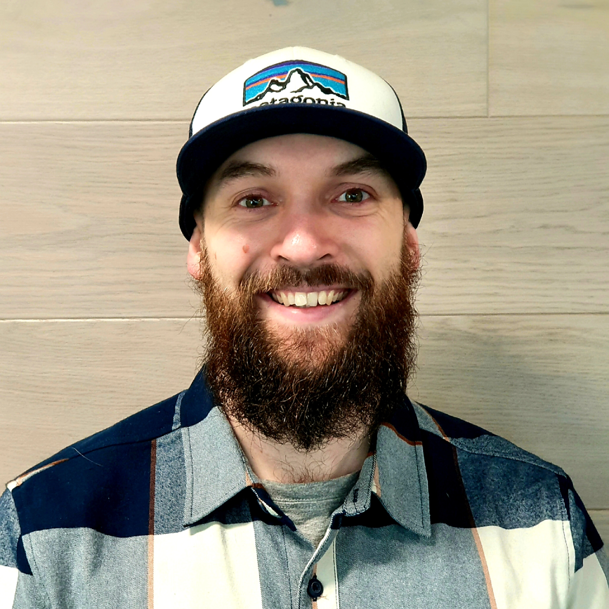
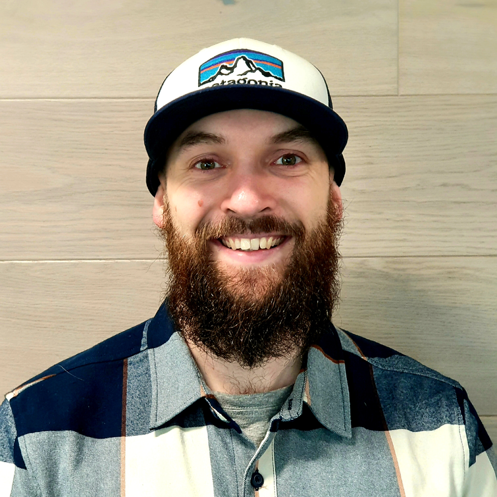

Welcome to the Legal Innovation Lab Wales' Developer Blog.
This is a space for our development team to write about topics which interest them, share our ideas and discuss what we’re working on.
Who are we?
We’re a small team of of software developers in a fairly unique position which allows us to be relatively unconstrained by the more typical limitations of developers. As part of the Legal Innovation Lab Wales, the prototypes we build are free from many of the constraints around commercial viability.
You can read more about the lab by clicking on the above or get in touch through many of the links. We would absolutely love to hear from you.
We aim to build software well, open source as much of our work as possible and develop solutions for people who might not have otherwise had the access.
How to keep up to date
We’ll try and post here fairly regularly. For now, we’re going to have an index on our developer page and we’ll post update on Twitter at the least. If you would like email updates then please let us know!
Why our own blog?
I spent a long time thinking about how best to implement this page; should we write articles on medium? or contribute to dev.to? Or use our Squarespace site for a blog? None of these solutions are wrong, but we are all developers, who can write HTML. So we’ve gone for the simplest option.
This is not to say that we won’t submit articles to other sources, but we're going to store all of them in the version control and for as long as we’re around you’ll be able to find them here.